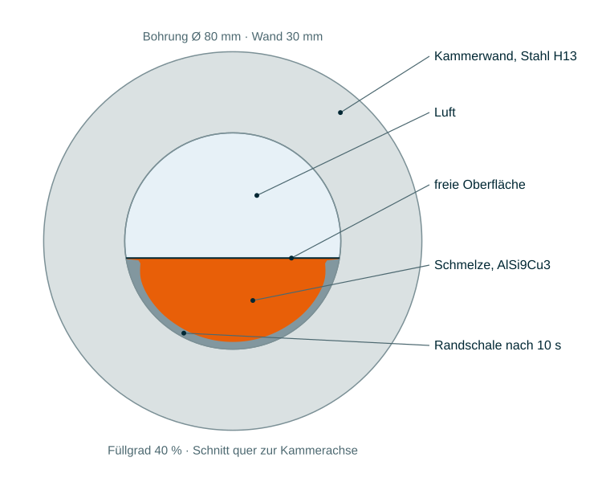
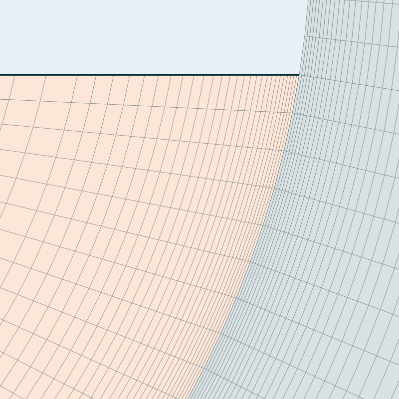
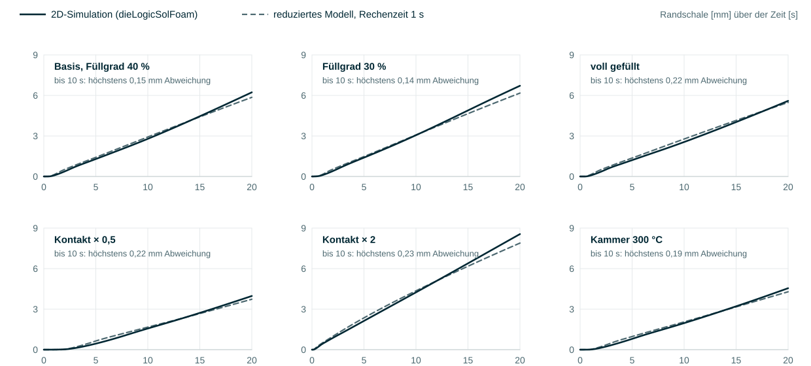
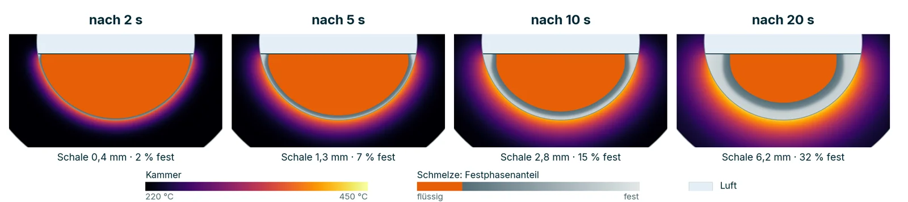
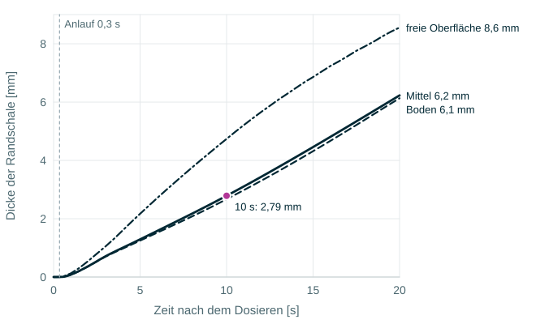
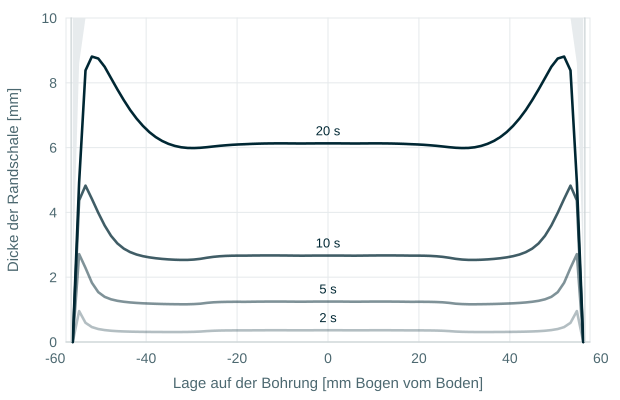
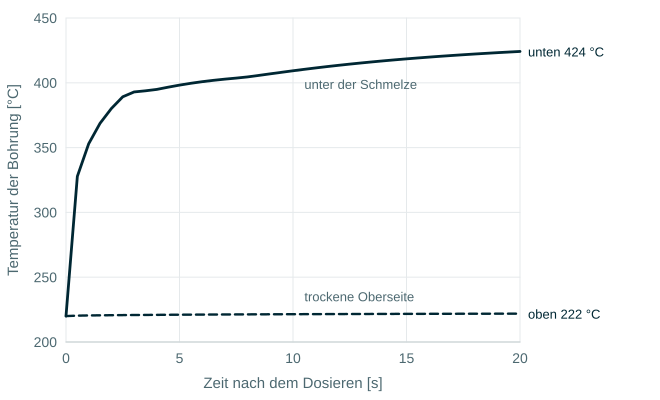
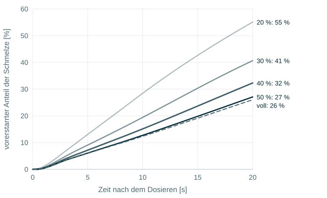
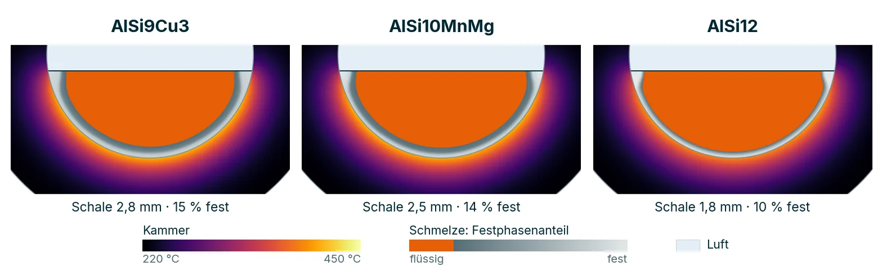
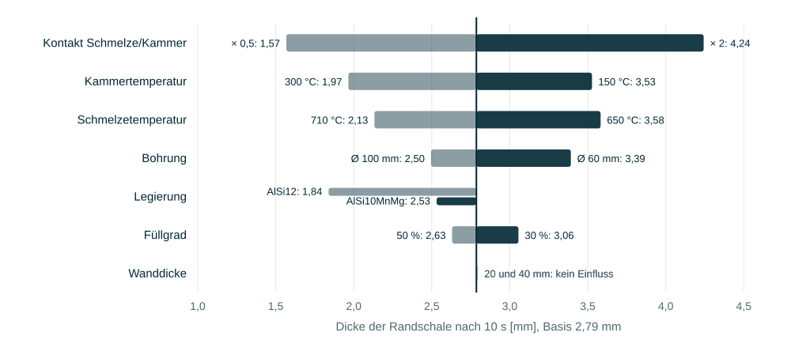

Nach dem Dosieren liegt die Schmelze einige Sekunden in der Gießkammer. An der kalten Wand erstarrt eine Schale; im Basisfall (Ø 80 mm, 40 % gefüllt, AlSi9Cu3) ist sie nach 10 s im Mittel 2,8 mm dick, und 15 % der Schmelze sind fest. Ein halbanalytisches Modell ohne angepasste Konstanten trifft 21 Rechnungen bis 10 s auf 0,34 mm; Netz, Energiebilanz, Fläche und Symmetrie stimmen. Offen ist der Kontakt zwischen Schmelze und Kammer: er bestimmt das Ergebnis am stärksten und ist nicht gemessen.
1. Worum es geht
Zwischen Dosieren und Schuss liegen 1 bis 10 s. In dieser Zeit gibt die Schmelze Wärme an die Kammer ab, und an der Wand erstarrt eine Randschale. Der Kolben reißt sie beim Schuss auf und trägt ihre Kristalle in die Form: grobe, schon in der Kammer erstarrte Körner im feinen Gefüge, in der Literatur externally solidified crystals (ESC). Sie mindern die Dehnung des Gussteils. Die Kammer ist meist nur zu 30 bis 50 % gefüllt; die Schmelze berührt nur den unteren Teil der Bohrung, darüber steht Luft.
Gefragt ist, wie dick die Schale wird, wie viel der Schmelze bis zum Schuss fest ist, und was man an Kammer und Betrieb daran ändern kann. Eine veröffentlichte Messung der Schale in einer Druckgießkammer, die sich nachrechnen ließe, haben wir nicht gefunden. Diese Seite prüft deshalb die Rechnung an dem, was ohne Messung feststeht: an exakten Größen der Geometrie, an Bilanzen, an Grenzfällen und an einem halbanalytischen Modell, das dieselbe Physik ohne Netz beschreibt.

2. Das Modell
Gerechnet wird ein Schnitt quer zur Kammer mit dieLogicSolFoam, dem Erstarrungssolver, der sonst Gussteil und Form zusammen rechnet: Wärmeleitung mit Erstarrung in Schmelze und Stahl, eine Gleichung für beide, der Festphasenanteil $f_s(T)$ aus einer Scheil-Kurve der Legierung.
Die Schmelze liegt unter einer ebenen freien Oberfläche bis zum Füllgrad, ringsum ein Stahlring. Zwischen Schmelze und Kammer gilt ein Wärmeübergang von 5000 W/(m² K), solange die Schmelze an der Wand flüssig ist; er fällt auf 2000 W/(m² K), während der Festanteil an der Wand von 0,6 auf 1 steigt, weil die Schale schrumpft und sich von der Wand löst. Freie Oberfläche und trockene Bohrung tauschen Wärme durch Strahlung, linearisiert mit 20 und 10 W/(m² K); zusammen sind das etwa 1 % des Wärmestroms. Außen gibt die Kammer 15 W/(m² K) an 20 °C ab. Die Schmelze ruht, es gibt nur Wärmeleitung; Zeit null ist der Augenblick, in dem die Schmelze an der Wand liegt.
| Basisfall | Wert |
|---|---|
| Schmelze | AlSi9Cu3, 680 °C, Erstarrung 595 bis 490 °C |
| Kammer | Warmarbeitsstahl H13, 220 °C, Wand 30 mm |
| Bohrung, Füllgrad | Ø 80 mm, 40 % (benetzt 162°) |
| Kontakt Schmelze/Kammer | 5000 → 2000 W/(m² K) zwischen $f_s$ = 0,6 und 1 |
| Rechnung | 20 s, 10 926 Zellen, etwa 15 s Rechenzeit |
3. Das Netz
Die Schale wächst an der Wand, dort liegt deshalb eine polare Schicht: 0,1 mm dicke Zellen senkrecht zur Bohrung, nach innen um 8 % je Zelle größer, im Stahl spiegelbildlich. Den Rest der Schmelze füllt ein halbes O-Netz. Das Netz entsteht für jeden Füllgrad von 10 bis 90 % und für die volle Kammer aus denselben Regeln; an der Ecke zur freien Oberfläche bestimmt der Winkel β der benetzten Bohrung die Form der Zellen (71° bei 30 %, 132° bei 90 %).

4. Gegen die Analytik
Der Solver selbst ist an exakten Lösungen geprüft, auf der Seite dieLogicSolFoam:
die Erstarrungsfront nach Neumann (stefan1D) und zwei Platten mit Kontaktwiderstand
(conjugateSlab1D). Für die Kammer kommen vier Prüfungen dazu, die keine Messung brauchen, und ein
halbanalytisches Modell der ganzen Aufgabe.
| Prüfung | Sollwert | Rechnung | Bewertung |
|---|---|---|---|
| Fläche der Schmelze gegen das Kreissegment | $\tfrac{R^2}{2}(2\beta - \sin 2\beta)$ | auf 0,03 % | trifft |
| Energiebilanz: abgegebene gegen abgeflossene Wärme | 0 | 6 · 10⁻⁶ | trifft |
| Netz: 3 819 / 10 926 / 29 490 Zellen, Schale nach 20 s | unabhängig vom Netz | 6,24 / 6,23 / 6,22 mm | 0,3 % |
| Netz: vorerstarrter Anteil nach 20 s | unabhängig vom Netz | 32,3 % in allen drei | trifft |
| Halb gefüllt gegen volle Kammer, Schale nach 10 / 20 s | gleich je benetzter Länge | 2,63 / 5,84 gegen 2,55 / 5,60 mm | 3 bis 4 %, erklärt |
| Halbanalytisches Modell, 21 Varianten, bis 10 s | gleiche Physik | höchstens 0,34 mm, 1,8 Pkt. | trifft |
Symmetrie. Eine halb gefüllte Kammer ist die volle Kammer, in der Mitte durchgeschnitten: dieselbe Schmelze je benetzter Länge, die freie Oberfläche liegt auf der Symmetrielinie. Je benetzter Länge müssten beide dieselbe Schale bilden, wenn die freie Oberfläche keine Wärme abgäbe und die trockene obere Hälfte der Kammer nicht wäre. Die halb gefüllte Kammer liegt 3 bis 4 % darüber. Das passt zu dem, was die Rechnung an der Ecke zur freien Oberfläche zeigt: Die trockene Kammer über der Schmelze bleibt kalt und zieht seitlich Wärme aus dem heißen Stahl unter der Schmelze; die volle Kammer hat keinen trockenen Teil. Die Strahlung der freien Oberfläche trägt etwa 1 % bei. Ab 50 % Füllgrad bleibt die Schale je benetzter Länge innerhalb dieser 4 % bei der vollen Kammer.
Das halbanalytische Modell beschreibt dieselbe Physik mit drei Bausteinen, ohne Netz und ohne angepasste Konstanten. Die Kammer ist ein Halbraum aus Stahl. Ihre Temperatur unter der Schmelze folgt aus der Geschichte des Wärmestroms (Duhamel), mit der exakten Antwort eines Halbraums, der nur auf einem Streifen von der Breite der benetzten Bohrung $2\beta R$ beheizt wird, neben der trockenen Bohrung:
$e_s = \sqrt{k\rho c}$ ist die Wärmeeindringzahl des Stahls, $a_s$ seine Temperaturleitfähigkeit; für die volle Kammer ist $m = 1$, die gewöhnliche Antwort des Halbraums. Die Schmelze ist ein Ersatzzylinder mit derselben Schmelzemenge je benetzter Länge, $R_{eq} = 2A/P$; für die volle und die halb gefüllte Kammer ist das exakt, für die Segmente trifft er die langsamste Abkühlform des echten Segments (bei 30 % Füllgrad 30,4 gegen 30,3 mm, aus einer Eigenwertrechnung mit Differenzen). Die Überhitzung fließt nach der exakten Antwort des Zylinders ab (Bessel-Reihe). Die Schale wächst nach dem Anlauf, sobald die Schmelze an der Wand die Liquidus-Temperatur erreicht hat, als Wärmebilanz bis zur Liquidus-Isotherme, mit der echten Kurve $f_s(T)$ und demselben Kontakt wie im Solver:

Das Modell gibt den Mittelwert der Schale wieder, nicht ihre Verteilung entlang der Bohrung. Die dickere Schale an der freien Oberfläche geht nur über den seitlichen Wärmefluss in die trockene Kammer ein; deshalb unterschätzt es die Schale bei kleinem Füllgrad nach 10 s etwas. Die Temperatur der Bohrung unter der Schmelze geben Modell und Rechnung beide aus: das ist die Größe, an der sich beide messen lassen (Abschnitt 7).
5. Was die Schale wachsen lässt

Anlauf, dann fast linear. In den ersten 0,1 bis 2 s verliert die Schmelze an der Wand ihre Überhitzung; danach wächst die mittlere Schale fast linear, im Basisfall um 0,3 mm je Sekunde ($d \approx 0{,}226\,(t - 0{,}34)^{1{,}11}$ mm, $t$ in s). Das ist nicht das Wurzelgesetz der Erstarrung an einer kalten Wand: In den Liegezeiten einer Gießkammer begrenzen der Kontakt und die Erwärmung der Bohrung das Wachstum, nicht die Wärmeleitung durch die Schale.

Freie Oberfläche. An der Ecke zur freien Oberfläche ist die Schale bis doppelt so dick wie am Boden (30 % Füllgrad nach 10 s: 5,9 gegen 2,8 mm). Dort ist die Schmelze ein dünner Keil, und der heiße Stahl darunter gibt Wärme seitlich an die kalte, trockene Kammer ab; der Keil selbst erstarrt ganz durch. Über 50 % Füllgrad ist der Winkel an der Ecke stumpf, der Effekt verschwindet.

Die Kammer wird ungleich warm. Nach 10 s hat die Bohrung unter der Schmelze 409 °C, die trockene Oberseite 221 °C. Ein Unterschied von 190 K über den Umfang ist eine bekannte Ursache dafür, dass sich Gießkammern verziehen.

Füllgrad. Weniger Füllung heißt weniger Schmelze je benetzter Wand: die Überhitzung ist früher weg, die Schale wächst schneller, und ein viel größerer Teil der Schmelze ist fest (nach 10 s 19 % bei 30 %, 15 % bei 40 %, 13 % bei 50 % Füllgrad).

Legierung. AlSi9Cu3 erstarrt über einen weiten Bereich (595 bis 490 °C): eine breite, teigige Schale, die in 20 s nicht ganz fest wird. AlSi12 erstarrt fast bei einer Temperatur (582 bis 572 °C): eine dünne, scharf begrenzte Schale und ein Drittel weniger vorerstarrt. AlSi10MnMg liegt dazwischen.

Stellschrauben. Je ein Parameter gegen den Basisfall verändert: Am stärksten wirkt der Kontakt zur Kammer (halber Wärmeübergang gibt 0,56-mal, doppelter 1,5-mal die Schale nach 10 s), dann die Temperaturen von Kammer (±70 K: ±28 %) und Schmelze (±30 K: etwa ±25 %). Die Wanddicke spielt ab 20 mm keine Rolle: in 20 s dringt die Wärme nur etwa 10 mm in den Stahl ein.

| Liegezeit | Füllgrad 30 % | 40 % | 50 % |
|---|---|---|---|
| 2 s | 0,4 mm · 3 % | 0,4 mm · 2 % | 0,4 mm · 2 % |
| 5 s | 1,4 mm · 9 % | 1,3 mm · 7 % | 1,2 mm · 6 % |
| 10 s | 3,1 mm · 19 % | 2,8 mm · 15 % | 2,6 mm · 13 % |
Randschale im Mittel und vorerstarrter Anteil der Schmelze; AlSi9Cu3 680 °C, Kammer 220 °C, Ø 80 mm. Im Betrieb kostet jede Sekunde Liegezeit rund 0,3 mm Schale; 300 statt 220 °C in der Kammer geben 29 % weniger, 710 statt 680 °C in der Schmelze 24 % weniger, der halbe Wärmeübergang (Trennmittel, Beschichtung) 44 % weniger.
6. Welche Kammer?
Wie viel der Schmelze vorerstarrt, hängt daran, wie viel Wand auf wie viel Schmelze kommt. Eine Studie über Bohrungen von 50 bis 300 mm und Füllgrade von 10 bis 90 % (je Zelle ein Schnitt wie der Basisfall, gerechnet bis 10 s) gibt den Anteil nach 5 s:
| vorerstarrt nach 5 s | Ø 50 | 70 | 100 | 150 | 200 | 300 mm |
|---|---|---|---|---|---|---|
| Füllgrad 10 % | 48,9 % | 31,1 % | 17,6 % | 9,5 % | 6,4 % | 3,9 % |
| 30 % | 19,0 % | 11,0 % | 6,6 % | 4,0 % | 2,8 % | 1,8 % |
| 50 % | 11,9 % | 7,3 % | 4,6 % | 2,8 % | 2,0 % | 1,3 % |
| 70 % | 9,6 % | 6,0 % | 3,8 % | 2,4 % | 1,7 % | 1,1 % |
| 90 % | 9,6 % | 6,0 % | 3,8 % | 2,3 % | 1,7 % | 1,1 % |
Bei gleichem Füllgrad hat Ø 50 mm das Neun- bis Dreizehnfache von Ø 300 mm, mehr Wand je Schmelze. 10 % Füllgrad gibt das Vier- bis Fünffache von 90 %; zwischen den üblichen 30 und 70 % das 1,6- bis 2-Fache, über 70 % ändert sich kaum noch etwas. Die Schale selbst wächst überall ähnlich, 0,2 bis 0,5 mm je Sekunde.
Die Länge der Kammer kommt im Schnitt nicht vor, wohl aber über die Dosiermenge: Die Schmelzefläche im Schnitt ist $V/L$. Entlang einer Linie gleicher Fläche ändert sich der Anteil kaum, weil die benetzte Breite eines Segments gegebener Fläche nur schwach vom Durchmesser abhängt. Bei gleicher Dosiermenge entscheidet deshalb die Länge: 10 kg sind nach 5 s in einer 500 mm langen Kammer zu rund 3 % fest, in einer 1200 mm langen zu rund 5 %, fast unabhängig vom Durchmesser. Die Kammer gehört damit in die Auslegung, nicht erst in den Versuch.
7. Grenzen und Messung
Die Schmelze ruht. Das ist die größte Vereinfachung. Beim Dosieren und danach bewegt sich die Schmelze, sie schwappt noch, wenn der Kolben anfährt: Die Strömung bringt heiße Schmelze an die Wand und verteilt die Überhitzung. An der Wand wächst die Schale dann langsamer und beginnt später, die Schmelze als Ganzes kühlt schneller ab. Was die ruhende Rechnung zeigt, ist deshalb die Wirkung von Kammer, Füllgrad und Legierung im Vergleich, nicht die Schale eines bestimmten Schusses. Während des Schusses wächst die Schale weiter; auch das fehlt hier.
Der Kontakt ist nicht kalibriert. 5000 und 2000 W/(m² K) sind Werte in der Größenordnung der Literatur, und der Kontakt wirkt von allen Größen am stärksten. Gemessen werden kann er mit einem Thermoelement in der Kammerwand unter der Schmelze: Rechnung und Modell geben genau diese Temperatur aus (Abschnitt 5), und an ihr lässt sich der Kontakt anpassen. Das ist der nächste Schritt dieser Validierung.
Weiter: Werkstoffdaten sind Näherungen ($f_s(T)$ nach Scheil; für eine bestimmte Legierung aus CALPHAD), die freie Oberfläche ist eben und ohne Oxidhaut, und der Schnitt ist 2D: kein Wärmefluss entlang der Kammer, kein Kolben, keine Stirnseiten.
Diese Seite ist keine Validierung an einer Messung. Sie zeigt, dass die Rechnung die Geometrie, die Bilanzen und ein halbanalytisches Modell der gleichen Physik trifft, und welche Effekte daraus folgen. Ob die Schale so dick wird, entscheidet der Kontakt zwischen Schmelze und Kammer; er ist zu messen.
8. Fall und Daten
python3 tools/makeCase.py runs/meinFall --fill 0.35 --alloy AlSi12 --D 70 # Netz und Fall für jeden Füllgrad runs/meinFall/Allrun # Netz, Rechnung (etwa 15 s), Auswertung shellGrowth.png python3 tools/runStudy.py # die Studie, 21 Varianten python3 tools/shellModel.py --all # halbanalytisches Modell gegen alle Rechnungen
Die Studie liegt unter studies/shotSleeveShell2D: makeCase.py baut Netz und Fall aus den
Parametern (Füllgrad, Legierung, Stahl, Bohrung, Wand, Temperaturen, Kontakt), shellGrowth.py wertet
aus (Schale als Mittel, am Boden und an der freien Oberfläche, Profil entlang der Bohrung, vorerstarrter Anteil,
Temperatur der Bohrung), shellModel.py ist das halbanalytische Modell. Die Schale ist als Mittel die
„feste gleichwertige“ Dicke: die frei gewordene latente Wärme $\int f_s\,dA$ als Band auf der benetzten Bohrung.
Alle Fälle der Simulationsseiten sind zusätzlich unter webseite-faelle/ gesammelt.